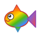

L'aquarium du Marais — un aquarium collaboratif rempli de dessins de poissons faits par des enfants
Un aquarium animé occupe tout l'écran. L'eau est bleu profond, des bulles
remontent doucement à la surface. Au fond, du sable doré porte l'inscription
« L'aquarium du Marais » tracée comme au doigt. Des algues vertes ondulent
et des rochers gris décorent le fond. Glouglou, le poisson mascotte
arc-en-ciel, nage avec des poissons dessinés et coloriés par des enfants.
GitHub Pages
GitHub, Inc.
88 Colin P Kelly Jr St, San Francisco, CA 94107, États-Unis pages.github.com
Propriété intellectuelle
Les dessins de poissons présentés sur ce site sont des créations
originales réalisées par des enfants. Leur reproduction ou réutilisation
sans autorisation est interdite.
Droit à l'image
Les dessins sont publiés avec l'autorisation des représentants légaux
(parents ou tuteurs) des enfants auteurs. Toute demande de retrait peut être
adressée à l'éditeur du site via l'adresse de contact ci-dessus.
Données personnelles et cookies
Ce site ne collecte aucune donnée personnelle et n'utilise aucun cookie.
Des statistiques de fréquentation anonymes sont collectées via
GoatCounter,
un outil respectueux de la vie privée qui ne dépose aucun cookie
et ne collecte aucune donnée personnelle identifiable.
Responsabilité
L'éditeur s'efforce d'assurer l'exactitude des informations diffusées
sur ce site mais ne saurait être tenu responsable d'erreurs, d'omissions
ou des résultats qui pourraient être obtenus par un mauvais usage
de ces informations.

Bienvenue dans l'aquarium du Marais !
Salut, moi c'est Glouglou !
Ici, chaque poisson a été dessiné et colorié par un enfant.
Toi aussi, tu peux ajouter le tien !
Comment explorer l'aquarium ?
Clique sur un poisson pour savoir qui l'a dessiné !
Regarde en bas à gauche pour voir combien de poissons nagent avec moi.
L'aquarium change de couleur selon l'heure du jour et de la nuit.
Les boutons en bas à droite
Active ou coupe les sons de l'aquarium.
Ouvre la galerie pour voir tous les dessins.
?
Ouvre cette aide.
Comment faire nager ton poisson avec moi ?
Prends une feuille de papier et dessine un joli poisson.
Colorie-le comme tu veux : crayons, feutres, peinture... tout est permis !
Demande à un adulte de prendre ton dessin en photo.
Et hop, ton poisson nagera bientôt avec moi et tous les copines et les copains !
En envoyant un dessin, le responsable légal de l'enfant autorise sa publication sur ce site. Un retrait peut être demandé à tout moment (voir mentions légales).